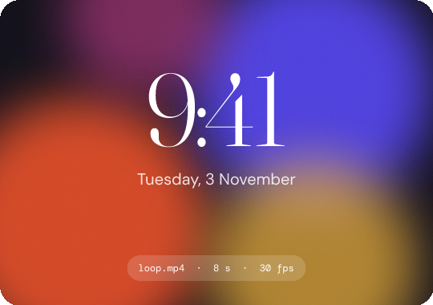

Put a GIF on your
Windows lock screen.
Windows Settings only accepts still pictures. LockscreenGif is a native WinUI 3 app that writes your frames straight into the lock screen image cache through a one-time elevated helper, so the app itself never needs admin rights or a background daemon.
Built with WinUI 3 for Windows 11 24H2+ (.NET 10 Desktop Runtime). See
full requirements →

Fig. 1 — what you see after Win + L, once “Set lock screen” has run.
How media reaches the lock screen
Windows Settings has no animation options. When you press Set lock screen, LockscreenGif hands the frames to a small privileged helper. The helper writes them into the protected lock screen image cache in SystemData, which is why one elevation is needed. The main app never runs as admin and nothing stays running in the background.
Choose
Pick a GIF or video (.mp4, .webm, .avi, .mov, .mkv). Loops under 10 seconds work best.
Edit
videos onlyTrim the duration, cap the FPS and scale the resolution with FFmpeg. GIFs skip this editor and go straight through.
Set
Nothing changes until you click Set lock screen. A one-time UAC prompt approves the helper’s write.
Applied
Frames are written to the cache and Windows reloads them. Press Win + L to see the result.
NOTE · WINDOWS COMPOSITOR & 25H2
“Applied” only confirms the cache files were written to disk, not that the animation has started. Windows drives the lock screen through undocumented internals. On Windows 11 25H2 (build 26200+), an internal feature (ID 38943831) can stop GIFs from animating. LockscreenGif has a built-in toggle in Prerequisites and Settings that turns it off, followed by a system restart.
Requirements & verification
Everything you need before installing, in one place. Check that your PC qualifies, then verify the release hash before you run anything.
Windows 11 24H2+ (build 26100+)
x64 only. ARM64 and 32-bit are not supported.
.NET 10 Desktop Runtime (x64)
The MSI installer does not bundle this runtime. Download it from Microsoft →
WinUI 3 & Windows App SDK
Fluent UI with an integrated video trimmer, diagnostics suite and settings manager.
Picture
Set in Settings > Personalization > Lock screen. Windows Spotlight and Slideshow override the cache frames.
Must be switched on
Settings > Accessibility > Visual effects. Required for the compositor to play animation.
Standard user + one-time UAC
The app runs without admin rights. Only the privileged helper needs approval, once, to write system cache files.
Windows Installer (MSI)
RECOMMENDEDInstalls the app, registers the privileged helper, adds Start Menu shortcuts and a clean uninstaller in Windows Settings.
Portable package (ZIP)
NO INSTALLERExtract anywhere and launch LockscreenGif.exe. The privileged helper asks for UAC elevation the first time you run it.
Get-FileHash .\LockscreenGif-*-x64.msi -Algorithm SHA256
Compare the output with the SHA256SUMS file on the GitHub Releases page.
LockscreenGif is an independent open-source project with no paid signing certificate, so Windows SmartScreen may show an “unrecognized app” warning. If the hash matches, click More info, then Run anyway.
Troubleshooting & common questions
Short answers to the things that actually go wrong: setup, compositor quirks and security prompts.
Why is my lock screen still static, or not animating?
Lock screen animation depends on the Windows compositor and your personalization settings. Check these three things:
Lock screen mode. It must be set to Picture. Windows Spotlight and Slideshow override the custom cache frames.
Animation effects. Switch them on in Settings > Accessibility > Visual effects. When off, Windows suppresses all lock screen motion.
Windows 11 25H2 (build 26200+). An internal Microsoft feature (ID 38943831) can stop GIFs animating. Turn on the compatibility toggle in LockscreenGif Settings, then restart your PC.
Does LockscreenGif run constantly in the background?
No. LockscreenGif runs only when configuring or changing your lock screen media. When you click Set lock screen, it writes the animation frames to the Windows system cache and immediately terminates. It does not run background daemons, system tray workers, or screen polling loops while your computer is unlocked.
Why does it ask for administrator privileges (UAC)?
Windows stores lock screen image cache files inside a protected system directory (SystemData) that standard user accounts cannot modify. A small elevated helper service performs the disk write, allowing the primary desktop application to operate entirely unprivileged. Administrator approval (UAC) is needed once during helper setup.
What media formats work best?
You can import animated GIFs or video files (.mp4, .webm, .avi, .mov, .mkv). Existing GIFs apply directly without re-encoding. Video files open the built-in editor powered by FFmpeg and Gifski to trim duration, set frame rate, and adjust resolution. Short seamless loops under 10 seconds work best to prevent excessive cache size.
Windows SmartScreen blocked the installer. How do I proceed?
Because LockscreenGif is an independent open-source project without a paid corporate signing certificate, Windows SmartScreen flags newly published releases. Verify the installer's integrity by running Get-FileHash .\LockscreenGif-*-x64.msi -Algorithm SHA256 and comparing the output with the SHA256SUMS file on GitHub Releases. Once verified, click More info → Run anyway.
How do I run the built-in diagnostics or export an issue report?
You can run system checks and export sanitized diagnostic logs directly from the app via the Diagnostics panel, or under Settings > Logs > Save logs as ZIP. The export strips sensitive machine details and creates a zip archive ready to attach to a GitHub issue.
How do I remove the animation and go back to my default lock screen?
Open Windows Settings > Personalization > Lock screen and select any standard Windows wallpaper, picture, or Windows Spotlight. Alternatively, click Remove Animated Lockscreen inside the LockscreenGif application. Windows immediately replaces the cached animation frames with the standard static image.
Open source, credits & build guide
MIT licensed. Maintained by SubhamPro11, based on the original project by Leapward-Koex.
WinUI 3 & Windows App SDK
Native Windows 11 Fluent framework for hardware-accelerated rendering and modern desktop styling.
CommunityToolkit.Mvvm
Type-safe, high-performance MVVM architecture with reactive bindings and messaging.
FFmpeg
Video frame demuxing, timeline trimming and decoding for video inputs.
Gifski (Kornel Lesiński)
GIF encoder with efficient colour palette quantization, temporal dithering and frame compression.
Microsoft .NET 10
The application runtime. Requires the .NET 10 Desktop Runtime (x64) on Windows 11.
# 1. Clone
git clone https://github.com/SubhamPro11/lockscreengtf.git
cd lockscreengtf
# 2. Restore dependencies and tools
dotnet restore
dotnet tool restore
# 3. Build and run the tests
dotnet build LockscreenGif.sln -c Release
# 4. Publish the standalone desktop app
dotnet publish LockscreenGif/LockscreenGif.csproj -c Release -p:PublishProfile=FolderProfileYou need Windows 11 x64 (build 26100+), the .NET 10 SDK and Visual Studio 2022/2025 or the C# Dev Kit.